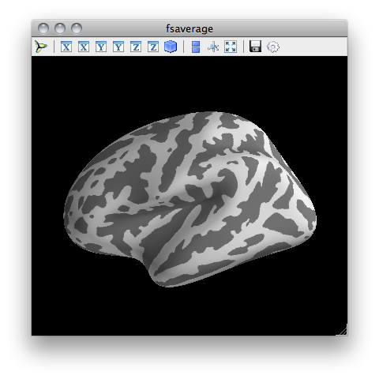

The command-line program pysurfer is designed to largely replicate Freesufer’s tksurfer command-line interface in the format and style of arguments it accepts. Like tksurfer, invoking it will initialize a visualization in an external window and begin an IPython session in the terminal, through which the visualization can be manipulated.
Initializing a simple visualization session is quite easy. Simply call pysurfer with three positional arguments: the subject_id, the hemisphere, and the surface geometry to visualize:
pysurfer fsaverage lh inflated
which will open a viewing session that looks like this:
Once the viewer window is open, there are two ways to manipulate the visualization. To see other angles, zoom in or out, and translate the brain, simply click and drag with your mouse. See the Mayavi documentation for more information about using the mouse and keyboard to interact with a Mayavi scence.
When pysurfer finishes loading the visualization, it initializes an IPython session in terminal, which allows for a more comprehensive interaction with the scene. The IPython interactive namespace will include a brain variable, which is bound to the viz.Brain object underlying the visualization. For convenience, the b variable is also mapped to this object. (As a reminder, you can always type whos in an IPython prompt to see the contents of the interactive namespace.) See the viz.Brain documentation for full information about how to control the visualization in this way.
As in tksurfer, most aspects of the visualization can be initialized from the command-line. To get a full documentation of the command-line interface, simply type pysurfer at a terminal prompt and hit enter. For convenience, this usage message is reproduced below.
usage: pysurfer subject_id hemisphere surface [options]
PySurfer is a package for visualization and interaction with cortical
surface representations of neuroimaging data from Freesurfer.
The command-line program pysurfer is designed to largely replicate
Freesufer's tksurfer command-line interface in the format and style
of arguments it accepts, and, like tksurfer, invoking it will initialize
a visualization in an external window and begin an IPython session in the
terminal, through which the visualization can be manipulated.
The visualization interface is exposed through methods on the `brain'
variable that will exist in IPython namespace when the program finishes
loading. Please see the PySurfer documentation for more information
about how to interact with the Brain object.
positional arguments:
subject_id subject id as in subjects dir
hemi hemisphere to load
surf surface mesh (e.g. 'pial', 'inflated')
optional arguments:
-h, --help show this help message and exit
-no-curv do not display the binarized surface curvature
-morphometry MEAS load morphometry file (e.g. thickness, curvature)
-annotation ANNOT load annotation (by name or filepath)
-label LABEL load label (by name or filepath
-borders only show label/annot borders
-overlay FILE load scalar overlay file
-range MIN MAX overlay threshold and saturation point
-min MIN overlay threshold
-max MAX overlay saturation point
-sign {abs,pos,neg} overlay sign
-name NAME name to use for the overlay
-size SIZE size of the display window (in pixels)
-background COLOR background color for display
-cortex COLOR colormap for binary cortex curvature
-title TITLE title to use for the figure